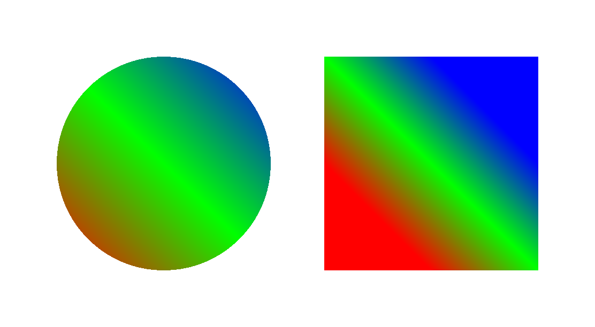

|
superclass: object% |
linear gradient 与 brush% 一起使用,以平滑的颜色过渡来填充区域。
颜色过渡是基于一条线的,颜色被分配给沿线的停止点,中间的点的颜色是由停止点的颜色内插而来。
渐变线上的一个点的颜色会传播到绘图环境中的所有点,这些点被一条穿过该点并且垂直于渐变线的线所接触。
constructor
(new linear-gradient% [x0 x0] [y0 y0] [x1 x1] [y1 y1] [stops stops]) → (is-a?/c linear-gradient%) x0 : real? y0 : real? x1 : real? y1 : real? stops : (listof (list/c (real-in 0 1) (is-a?/c color%)))
用一条从 (x0, y0)到端点 (x1, y1) 的线创建一个线性梯度。
stops 列表为沿线的停止点分配颜色,其中 0.0 对应于 (x0, y0),
1.0 对应于 (x1, y1), 而中间的数字则对应于中间的点。
stops 中的元素隐含地按点排序(即按 0.0 和 1.0 之间的数字排序)。 对于同一个点的多个元素来说,顺序是被保留的,在这种情况下,给定点的第一个元素被无限地处理在该点之前, 对于一个停止点的第一个和最后一个之间的额外元素实际上被忽略了。
Examples:
> (define ellipse-brush (new brush% [gradient (new linear-gradient% [x0 0] [y0 200] [x1 200] [y1 0] [stops (list (list 0 (make-object color% 255 0 0)) (list 0.5 (make-object color% 0 255 0)) (list 1 (make-object color% 0 0 255)))])]))
> (define rectangle-brush (new brush% [gradient (new linear-gradient% [x0 0] [y0 100] [x1 100] [y1 0] [stops (list (list 0 (make-object color% 255 0 0)) (list 0.5 (make-object color% 0 255 0)) (list 1 (make-object color% 0 0 255)))])]))
> (dc (λ (dc dx dy) (define old-pen (send dc get-pen)) (define old-brush (send dc get-brush)) (define-values (ox oy) (send dc get-origin)) (send dc set-pen "black" 1 'transparent) (send dc set-brush ellipse-brush) (send dc set-origin (+ ox dx 50) (+ oy dy 50)) (send dc draw-ellipse 0 0 200 200) (send dc set-brush rectangle-brush) (send dc set-origin (+ ox dx 300) (+ oy dy 50)) (send dc draw-rectangle 0 0 200 200) (send dc set-pen old-pen) (send dc set-brush old-brush) (send dc set-origin ox oy)) 550 300) 
返回梯度的控制线为 x0, y0,x1 和 y1 。
返回梯度的色块列表。